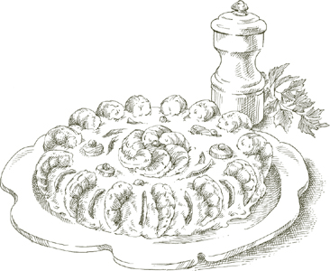
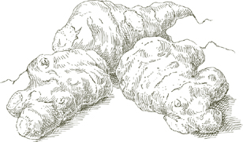

For 28 canapés
½ pound fresh ricotta
1 tablespoon butter, softened to room temperature
8 flat anchovy fillets (preferably the ones prepared at home)
1 tablespoon extra virgin olive oil
Black pepper, ground fresh from the mill
7 slices good-quality, firm white toasting bread
1. Preheat oven to 400°.
2. If the ricotta is very moist, wrap it in cheesecloth, and hang it to drain over a sink or bowl for about 30 minutes. Put the ricotta and all the other ingredients, except for the bread, into the food processor, and chop to a creamy consistency.
3. Spread the bread out on a cookie sheet and bake in the preheated oven for a few minutes until it is toasted to a light gold.
4. Trim the bread slices of all the crust, cut each one in half, and then in half again, producing 4 squares from every slice. Spread the ricotta and anchovy cream over the bread and serve.
Ahead-of-time note  You can prepare the crostini 2 or 3 hours in advance. Spread the ricotta and anchovy cream over the bread just before serving.
You can prepare the crostini 2 or 3 hours in advance. Spread the ricotta and anchovy cream over the bread just before serving.
A SAVORY, attractive way to serve hard-boiled eggs whose yolks, after cooking, are blended with a piquant green sauce.
For 6 servings
2 tablespoons extra virgin olive oil
½ tablespoon chopped capers, soaked and rinsed if packed in salt, drained if in vinegar
1 tablespoon chopped parsley
3 flat anchovy fillets (preferably the ones prepared at home), chopped very fine
¼ teaspoon chopped garlic
¼ teaspoon English or Dijon-style mustard
Salt
A sweet red bell pepper, diced not too fine
1. Put the eggs in cold water and bring to a boil. Cook at a slow boil for 10 minutes, then remove the eggs from the water and set aside to cool.
2. When cool, shell the eggs and cut them in half lengthwise. Carefully scoop out the yolks, taking care to leave the whites intact, and set aside the whites.
3. Put the yolks, olive oil, capers, parsley, anchovies, garlic, mustard, and a tiny pinch of salt in a bowl and, with a fork, mash all the ingredients into a creamy, uniform mixture. (If doing a large quantity for a party, you may want to blend them in a food processor.)
4. Divide the mixture into 12 equal parts and spoon into the cavities of the empty egg whites. Top with cubes of the diced red pepper.

HERE, roasted peppers and anchovies steep together in olive oil, achieving a powerfully appetizing exchange of flavors: The peppers acquire spiciness while sharing their sweetness with the anchovies. The dish is most successful with the mellow anchovies one fillets and puts up in oil at home.
For 8 or more servings
8 sweet red and/or yellow bell peppers
4 garlic cloves
16 large anchovy fillets (preferably the ones prepared at home)
Salt
Black pepper, ground fresh from the mill
Oregano
3 tablespoons capers, soaked and rinsed if packed in salt, drained if packed in vinegar
¼ cup extra virgin olive oil
1. Roasting the peppers: The most delicious flavor and firmest consistency are attained when peppers are roasted over an open flame. It can be done on a charcoal-fired grill, in the broiler of an oven, or directly over the burner of a gas stove. The last is a very satisfactory method: The peppers can rest directly over the gas or, if you have one, on one of those grills or metal screens that are made specifically for cooking over gas burners. Whichever way you do them, roast the peppers until the skin is blackened on one side, then turn them with tongs until the skin is charred all over. Cook them as briefly as possible to keep the flesh firm. When done, put them in a plastic bag, twisting it tightly shut. As soon as they are cool enough to handle comfortably, remove the peppers from the bag and pull off the charred peel with your fingers.
2. Cut the peeled peppers lengthwise into broad strips about 2 inches wide. Discard all the seeds and pulpy inner core. Pat the strips as dry as possible with paper towels. Do not ever rinse them.
3. Mash the garlic cloves with a heavy knife handle, crushing them just enough to split them and to loosen the peel, which you will remove and discard.
4. Choose a serving dish that can accommodate the peppers 4 layers deep. Line the bottom with one layer. Over it place 4 or 5 anchovy fillets. Add a pinch of salt, a liberal grinding of black pepper, a light sprinkling of oregano, a few capers, and 1 garlic clove. Repeat the procedure until you have used all the ingredients. Over them pour the olive oil, adding more if necessary to cover the top layer of peppers.
5. Let the peppers marinate for at least 2 hours before serving. If you are serving them the same day, do not refrigerate them. If serving them a day or more than that, cover tightly with plastic film, and keep in the refrigerator until an hour or two before serving, allowing the dish to return to room temperature before bringing it to the table. If keeping it over a day, after 24 hours remove and discard the garlic cloves.
Note Red and yellow peppers alone, roasted and skinned as described above, lightly salted, laid flat in a deep dish, and covered with extra virgin olive oil make a sensationally delicious appetizer. It would look most appealing on a buffet table, or take an important place in an assortment of dishes for a light lunch.
WHAT MAKES THIS one of the freshest and most interesting ways to serve eggplant is the play of textures and flavors—the luscious softness of the roasted eggplant flesh against the crisp raw pepper, and the pungent eggplant flavor subsiding next to the cool, refreshing notes of the cucumber. It can be served as a salad appetizer, or as a spread on a thick slice of toast, or as a vegetable dish to accompany grilled meat.
For 6 servings
1½ pounds eggplant
½ teaspoon garlic chopped very fine
½ cup sweet red bell pepper, diced into ⅓-inch cubes
¼ cup yellow bell pepper, diced like the red pepper
½ cup cucumber, diced like the bell pepper
1 tablespoon chopped parsley
2 tablespoons extra virgin olive oil
2 tablespoons freshly squeezed lemon juice
Black pepper, ground fresh from the mill
Salt
1. Wash the eggplant and roast it over a charcoal grill or a gas burner or in the broiler of an oven. (See Roasting the peppers.) When the skin on the side next to the flame is blackened and the eggplant has become soft, turn it with a pair of tongs. When all the skin is charred and the entire eggplant is soft and looks as though it had deflated in the heat, remove from the fire and set aside to cool off.
2. When you can handle the eggplant comfortably, pick off as much of the skin as you can. If a few very small bits remain attached to the flesh it doesn’t matter.
3. Cut the flesh into strips less than 1 inch wide. If there are many blackish seeds, remove them. Put the strips in a colander or a large strainer set over a deep dish to allow all excess liquid to drain away for at least 30 minutes.
4. When you see no more liquid being shed, transfer the chopped eggplant to a mixing bowl and toss with all the remaining ingredients, except for the salt. Add salt just when ready to serve.
For 4 servings
¼ pound carrots
1 garlic clove
¼ teaspoon dried oregano
Salt
Black pepper, ground fresh from the mill
1 tablespoon red wine vinegar
Extra virgin olive oil
1. Peel the carrots, cut them into 2-inch lengths, and cook them in boiling salted water for about 10 minutes. The exact cooking time will vary depending on the thickness, youth, and freshness of the carrots. For this recipe, they must be cooked until tender, but firm because the marinade will soften them further. To cook them uniformly, put the thickest pieces into the water a few moments before the thin, tapered ones.
2. Drain and cut the carrots lengthwise into sticks about ¼ inch thick. Place in a small, but deep serving dish.
3. Mash the garlic clove with a heavy knife handle, crushing it just enough to split it and to loosen the skin, which you will remove and discard. Bury the peeled clove among the carrot sticks. Add the oregano, salt, a few grindings of pepper, the wine vinegar, and just enough olive oil to cover the carrots.
4. If serving them the same day, allow the carrots to steep in their marinade for at least 3 hours at room temperature. If making them for another day, cover tightly with plastic wrap, and refrigerate until 2 hours before serving, allowing them to come to room temperature before bringing to the table. If keeping for longer than a day, remove the garlic after 24 hours.
THE STOUT, globe artichoke common to North American markets is but one of several varieties grown in Italy. It is, however, precisely the kind that Romans use to prepare one of the glories of the antipasto table, i carciofi alla romana, one of the tenderest and most enjoyable of all artichoke dishes. In it, the artichoke is braised whole, with the stem on, and served thus, upside down, at room temperature. When you step into a Roman trattoria, if it is artichoke season, you will see them displayed on great platters bristling with their upended stems. The stem, when carefully trimmed, is the most delectable and concentrated part of the entire vegetable. The only exacting part of this recipe is, in fact, the trimming away of all the tough, inedible parts that usually make eating artichokes a chore. When you master the preparation of carciofi alla romana, you will be able to apply the same sound principles to a broad variety of other artichoke dishes.
For 4 servings
4 large globe artichokes
½ lemon
3 tablespoons parsley chopped very fine
1½ teaspoons garlic chopped very fine
6 to 8 fresh mint leaves, chopped fine
Salt
Black pepper, ground fresh from the mill
½ cup extra virgin olive oil
1. In preparing any artichoke it is essential to discard all the tough, inedible leaves and portions of leaves. When doing it for the first time it may seem wasteful to throw so much away, but it is far more wasteful to cook something that can’t be eaten. Begin by bending back the outer leaves, pulling them down toward the base of the artichoke, and snapping them off just before you reach the base. Do not take the paler bottom end of the leaf off because at that point it is tender and quite edible. As you take more leaves off and get deeper into the artichoke, the tender part at which the leaves will snap will be farther and farther from the base. Keep pulling off single leaves until you expose a central cone of leaves that are green only at the tip, and whose paler, whitish base is at least 1½ inches high.
Slice at least an inch off the top of that central cone to eliminate all of the tough green part. Take the half lemon and rub the cut portions of the artichoke, squeezing juice over them to keep them from discoloring.
Look into the exposed center of the artichoke, where you will see at the bottom very small leaves with prickly tips curving inward. Cut off all those little leaves and scrape away the fuzzy “choke” beneath them, being careful not to cut away any of the tender bottom. If you have a small knife with a rounded point, it will be easier for you to do this part of the trimming. Return to the outside of the artichoke and, where you have snapped off the outer leaves, pare away any of the tough green part that remains. Be careful not to cut off the stem, which, for this dish, must remain attached.
Turn the artichoke upside down and you will notice, inspecting the bottom of the stem, that the stem consists of a whitish core surrounded by a layer of green. The green part is tough, the white, when cooked, soft and delicious, so you must pare away the green, leaving the white intact. Pare the stem thus all the way to the base of the artichoke, being careful not to detach it. Rub all the exposed cut surfaces with lemon juice.

2. In a bowl mix the chopped parsley, garlic, and mint leaves, and add salt and a few grindings of pepper. Set aside one-third of the mixture. Press the rest into the cavity of each artichoke, rubbing it well into the inner sides.
3. Choose a heavy-bottomed pot with a tight-fitting lid, such as enameled cast iron, tall enough to accommodate the artichokes, which are to go in standing. Put in the artichokes, tops facing down, stems pointing up. Rub the remaining herb and garlic mixture over the outside of the artichokes. Add all the olive oil, plus enough water to come up and cover one-third of the leaves, but not the stems.
4. Take a sufficient length of paper towels that, when doubled up, will completely cover the top of the pot. Or a muslin cloth will do as well. Soak the towels or cloth in water, and place over the top of the pot, covering it completely. Put the lid over the towels or cloth, then pull back over the lid any portion of them hanging down the sides of the pot.
5. Turn on the heat to medium and cook for 35 to 40 minutes. The artichokes are done when a fork easily pierces the thick part between the stem and the heart. Cooking times may vary depending on the freshness of the artichokes. If they are tough and take long to cook, you may have to add 2 or 3 tablespoons of water from time to time. If, on the other hand, they are very fresh and are cooked before all the water has simmered away, uncover the pot, remove the towels or muslin, and turn up the heat, quickly boiling away the water. The edges of the leaves resting on the bottom of the pot may turn brown, but do not worry, it improves their flavor.
6. When done, transfer the artichokes to a serving platter, setting them down with their stems pointing up. Reserve the olive oil and other juices from the pot: They are to be poured over the artichokes only just before serving. If you were to pour the oil and juices over the artichoke when it is still hot, it would soak them up, making the artichoke greasy and sodden, and depriving it of the sauce with which later you want to accompany it.
The ideal serving temperature is when the artichokes are no longer hot, but have not yet cooled completely, when they are still faintly touched by the waning warmth of cooking. But they are excellent even later, at room temperature, as they are usually served in Rome. Plan to use them the same day, however; like all cooked greens, their flavor deteriorates in the refrigerator.

ONE OF THE happiest coincidences of autumn in Italy is the contemporaneous appearance of white truffles and wild mushrooms. Among the best things it leads to, and easiest to prepare, is this luxurious salad. Fortunately, the basic salad of mushrooms and parmigiano-reggiano is so good that one needn’t forego it just because truffles may not be available or are too expensive. Just skip the truffles. If you can obtain fresh porcini, the wild boletus edulis mushroom, and if they are firm and sound (not wormy), by all means use them. If you cannot, of the cultivated mushrooms, the brown-skinned variety known as cremini is the most desirable to use because its flavor more closely recalls that of porcini. But if cremini are not available either, good-quality white button mushrooms are quite acceptable. What there can be no substitute for is the parmigiano-reggiano cheese and the olive oil. The latter should be a fruity extra virgin olive oil, if possible from the central Italian regions of Umbria or Tuscany. The oil absorbs flavor from the mushrooms, cheese, and the truffle, if any, and wiping the plate clean at the end with a good, crusty piece of bread may be the best part of all.
For 4 servings
½ pound firm, sound fresh mushrooms (see introductory note above)
1 to 2 tablespoons freshly squeezed lemon juice
⅔ cup celery cut crosswise into ¼-inch slices
⅔ cup parmigiano-reggiano cheese, shaved into flakes with a vegetable peeler or on a mandoline
OPTIONAL: a 1-ounce or larger white truffle
3 tablespoons extra virgin olive oil (see introductory note above)
Salt
Black pepper, ground fresh from the mill
1. Wash the mushrooms quickly under cold running water. Do not let them soak. Pat them thoroughly dry with a cloth or paper towels. Cut them into very thin slices, about ⅛ inch thick, slicing them lengthwise so that the center slices have a part of both the stem and the cap.
2. Put the sliced mushrooms in a shallow bowl or platter and toss immediately with the lemon juice to keep them white. Add the sliced celery and the flakes of Parmesan cheese. If you own a truffle slicer, use it to slice the optional white truffle very thin into the bowl. Otherwise, use a vegetable peeler in a light sawing motion.
3. Toss with the olive oil, salt, and pepper. Serve promptly.
For 6 servings
6 large, round, ripe firm tomatoes
¾ pound small raw shrimp in the shell
1 tablespoon red wine vinegar
Salt
Mayonnaise, made as directed, using the yolk of 1 large egg, ½ cup vegetable oil, and 2½ to 3 tablespoons freshly squeezed lemon juice
1½ tablespoons capers, soaked and rinsed if packed in salt, drained if packed in vinegar
1 teaspoon English or Dijon-style mustard
Parsley
1. Slice the tops off the tomatoes. With a small spoon, possibly a serrated grapefruit spoon, scoop out all the seeds, and remove some of the dividing walls, leaving three or four large sections. Don’t squeeze the tomato at any time. Sprinkle with salt, and turn the tomatoes upside down on a platter to let excess liquid drain out.
2. Rinse the shrimp in cold water. Fill a pot with 2 quarts of water. Add the vinegar and 1 tablespoon of salt, and bring to a boil. Drop in the shrimp and cook for just 1 minute (or more, depending on their size) after the water returns to a boil. Drain, shell, and devein the shrimp. Set aside to cool completely.
3. Set aside 6 of the best-looking, most regularly formed shrimp. Chop the rest not too fine, put them in a bowl, and mix them with the mayonnaise, capers, and mustard.
4. Shake off the excess liquid from the tomatoes without squeezing them. Stuff to the top with the shrimp mixture. Garnish each tomato with a whole shrimp and 1 or 2 parsley leaves. Serve at room temperature or even just slightly chilled.
For 6 servings
6 large, round, ripe firm tomatoes
Salt
2 seven-ounce cans imported Italian tuna packed in olive oil
Mayonnaise, made as directed, using the yolk of 1 large egg, ½ cup vegetable oil, and 2 tablespoons freshly squeezed lemon juice
2 teaspoons English or Dijon-style mustard
1½ tablespoons capers, soaked and rinsed if packed in salt, drained if packed in vinegar
Garnishes as suggested below
1. Prepare the tomatoes for stuffing as described in Step 1 of the recipe for Tomatoes Stuffed with Shrimp.
2. Put the tuna in a mixing bowl and mash it to a pulp with a fork. Add the mayonnaise, holding back 1 or 2 tablespoons, the mustard, and capers. Using the fork, mix to a uniform consistency. Taste and correct for salt.
3. Shake off the excess liquid from the tomatoes without squeezing them. Stuff to the top with the tuna mixture.
4. Spread the remaining mayonnaise on top of the tomatoes, and garnish in any of the following ways: with an olive slice, a strip of red or yellow pepper, a ring of tiny capers, or one or two parsley leaves. Serve at room temperature or slightly chilled.
Carpione, a magnificent variety of trout found only in Lake Garda, used to be so abundant that, when too many were caught to be consumed immediately, they were fried and then put up in a marinade of vinegar, onion, and herbs that preserved them for several days. Carpione has become so rare that few people today have seen one, let alone tasted its extraordinary flesh, but the practice has survived, applied to a large variety of fish, of both salt and fresh water. Similar methods are used in Venice, where they add raisins and pine nuts to the marinade and call it in saor, and in southern Italy, where it is called a scapece and the herb used is mint.
The tastiest of all fish for the in carpione treatment is, for me, the fresh sardine. Unfortunately, one doesn’t see it often in North American markets. Any fish, however, that can be fried whole, such as smelts, or a fillet of flat fish, such as sole, lends itself to this delectable preparation. Those who eat eel will find it particularly well suited to putting up in carpione. So, I suspect, would catfish, but I have never tried it.
For 4 to 6 servings
1 pound fresh sardines OR smelts OR other small fish OR ¾ pound fish fillets
Vegetable oil
An 8- to 9-inch skillet
½ cup flour, spread on a plate
Salt
Black pepper, ground fresh from the mill
1 cup onion sliced very thin
½ cup wine vinegar
4 whole bay leaves
1. If using whole fish, gut it, scale it, and cut off the heads and the center back fins. If using fillets, cut them into 4 to 6 pieces. Wash the fish or fillets in cold water, and pat thoroughly dry with paper towels.
2. Pour enough oil into the skillet to come 1 inch up its sides, and turn the heat on to medium-high. When the oil is hot, dredge both sides of the fish in the flour, and slip it into the pan. Do not crowd the pan. If necessary, you can fry the fish in two or more successive batches.
3. Fry for about 2 minutes on each side until both sides have a nice brown crust.
4. Using a slotted spoon or spatula, transfer the fish to a shallow serving platter, sprinkling it with salt and a few grindings of pepper. Choose a platter just large enough for the fish to form a single layer without overlapping.
5. When all the fish is fried, pour out and discard half the oil in the pan. Put the sliced onion into the same skillet and turn on the heat to medium-low. Cook at a gentle pace, stirring occasionally, until the onion is tender, but not colored.
6. Add the vinegar, turn up the heat, stir rapidly, and let it bubble for half a minute. Pour all the contents of the skillet over the fish. Top with the bay leaves.
7. Cover the platter with foil or with another platter. Allow the fish to steep in the marinade for at least 12 hours before serving. Turn it over once or twice during that period. It does not need to be refrigerated if you are going to have it within 24 hours. In the refrigerator it will keep for several days. Before bringing it to the table, remove it from the refrigerator an hour or two in advance to permit it to come to room temperature.
OF THE MANY WAYS the Italian tradition has of putting up fried or sautéed fish in a marinade, the most gently fragrant and the least acidic is the one given below, consisting of orange, lemon, and vermouth. It goes best with trout or other fine, freshwater fish.
For 6 servings
3 trout, perch, or other fine freshwater fish, about ¾ pound each, gutted and scaled, but with heads and tails left on
½ cup extra virgin olive oil
½ cup flour, spread on a plate
2 tablespoons onion chopped very fine
1 cup dry white Italian vermouth
2 tablespoons chopped orange peel, using only the rind, not the white pith beneath it
½ cup freshly squeezed orange juice
The freshly squeezed juice of 1 lemon
Salt
Black pepper, ground fresh from the mill
1½ tablespoons chopped parsley
OPTIONAL GARNISH: unpeeled orange slices
1. Wash the gutted, scaled fish in cold water and pat thoroughly dry with paper towels.
2. Put the oil in a skillet and turn on the heat to medium. When the oil is hot, lightly dredge both sides of the fish in flour and slip into the skillet. Don’t overcrowd the pan; if all the fish does not fit loosely at one time, cook it in batches, dredging it in flour only at the moment you are ready to put it into the pan.
3. Brown the fish well on one side, then turn it and do the other, calculating about 5 minutes the first side and 4 minutes the second. Using a slotted spatula or spoon, transfer the fish when browned to a deep serving dish broad or long enough to accommodate all of it without overlapping. Do not pour out the oil in the skillet.
4. With a well-sharpened knife, make two or three skin-deep diagonal cuts on both sides of the fish. Be careful not to tear the skin, and avoid cutting into the flesh.
5. Put the chopped onion into the skillet that still contains the oil in which you cooked the fish. Turn on the heat to medium and cook the onion until it becomes colored a pale gold.
6. Add the vermouth and the orange peel. Let the vermouth bubble gently for about 30 seconds, stir, then add the orange juice, lemon juice, salt, and a few grindings of pepper. Let everything bubble for about half a minute, stirring two or three times. Add the chopped parsley, stir once or twice, then pour the entire contents of the skillet over the fish in the serving dish.
7. Allow the fish to steep in its marinade at room temperature for at least 6 hours before refrigerating. Plan to serve the fish no sooner than the following day. Do serve it within 3 days at the latest to enjoy its flavor at its freshest. Take it out of the refrigerator at least 2 hours before bringing to the table to allow it to come to room temperature. Before serving, garnish it, if you like, with fresh slices of orange.
WHEN VERY GOOD SHRIMP is simmered briefly, then steeped in olive oil and lemon juice and served before ever seeing the inside of the refrigerator, it makes one of those appetizers in the Italian seafood repertory that is as sublime in taste as it is in its simplicity. You’ll find it on the menu of virtually every fish restaurant on the northern Adriatic. As in so many other Italian dishes where the principal elements are so few, the success of the preparation depends on the quality of its main ingredients: here, the shrimp and the olive oil. The first should be the juiciest and sweetest your fish market can provide, the latter the best estate-bottled Italian extra virgin olive oil you can find.
For 6 servings
1 stalk celery
1 carrot, peeled
Salt
2 tablespoons wine vinegar
1½ pounds choice small raw shrimp in the shell (if only larger shrimp are available, see note below)
½ cup extra virgin olive oil
¼ cup freshly squeezed lemon juice
Black pepper, ground fresh from the mill
1. Put the celery, carrot, 1 tablespoon of salt, and the vinegar in 3 quarts of water and bring to a boil.
2. When the water has boiled gently for 10 minutes, add the shrimp in their shells. If very tiny, the shrimp will be cooked just moments after the water returns to a boil. If medium-to-large, they will take 2 to 3 minutes longer.
3. When cooked, drain the shrimp, shell, and devein. If using medium-to-large shrimp, slice them lengthwise in half.
4. Put the shrimp in a shallow bowl and, while they are still warm, add the olive oil, lemon juice, and salt and pepper to taste. Toss well and allow to steep at room temperature for 1 hour before bringing to the table. Serve with good crusty bread to help wipe the plate clean of its delicious juices.
Note The dish is far better if never chilled, but if you are compelled to, you can prepare it a day in advance and refrigerate it under plastic wrap. Always return it to full room temperature before serving.

IF YOU ARE SUSPICIOUS, as I am, of dishes that look too pretty, this is one dish whose lovely appearance you can make allowances for, because it tastes as good as it looks. It is, moreover, very simple to execute. It does take time to clean, boil, and dice all the vegetables, but it can all be prepared and completed well in advance, whenever you feel like it and whenever you have the time. The only plausible explanation for this salad being called “Russian”—russa—is the presence of beets.
For 6 servings
1 pound medium shrimp in the shell
1 tablespoon plus 2 teaspoons wine vinegar
¼ pound green beans
2 medium potatoes
2 medium carrots
⅓ of a 10-ounce package frozen peas, thawed
6 small canned whole red beets, drained
2 tablespoons capers, soaked and rinsed if packed in salt, drained if in vinegar
2 tablespoons fine cucumber pickles, preferably cornichons, cut up
3 tablespoons extra virgin olive oil
Salt
Mayonnaise, made as directed, using the yolks of 3 eggs, 1¾ cups extra virgin olive oil (see note below), 3 tablespoons freshly squeezed lemon juice, and ⅜ teaspoon salt
1. Wash the shrimp. Bring water to a boil, add salt, and as it returns to a boil, put in the shrimp in their shells with 1 tablespoon of the vinegar. Cook for 4 minutes, less if the shrimp are small, then drain. When cool enough to handle, shell, and devein. Set the shrimp aside.
2. Snap both ends off the green beans and wash them in cold water. Bring water to a boil, add salt, drop in the beans, and drain them as soon as they are tender, but still firm.
3. Wash the potatoes with their skins on, put them in a pot with enough water to cover amply, bring to a boil, and cook until they are easily pierced with a fork. Drain and peel while still hot.
4. Peel the carrots, and cook them exactly as you cooked the beans, until tender, but still firm.
5. Drop the peas into salted, boiling water and cook not much longer than 1 minute. Drain and set aside.
6. Pat the beets as dry as possible with paper towels. When the cooked vegetables have cooled off, set aside a small quantity of each, including the beets but excepting the potatoes, which you will use later for the garnish. Cut up the rest as follows: the green beans into ⅜-inch lengths; the potatoes, carrots, and beets diced into ⅜-inch cubes. Put all the cut-up and diced vegetables, including the capers and cucumber pickles, in a mixing bowl.
7. Set aside half the shrimp. Dice the rest and add them to the bowl with the vegetables. Add the olive oil, 2 teaspoons wine vinegar, and salt and toss thoroughly. Add half the mayonnaise, and fold it into the mixture, distributing it evenly to coat the ingredients well. Taste and correct for salt.
8. Turn the contents of the bowl over onto a serving platter, preferably round. Shape it into a shallow, flat-topped, oval mound, pressing it with a rubber spatula to even it off and make the surface smooth. Spread the remaining mayonnaise over the mound, covering the entire surface and using the spatula to make it smooth.
9. Use the reserved vegetables and shrimp to decorate the mound in any way that you find attractive. One suggestion: Place a thin carrot disk on the center of the mound, and a pea in the center of the carrot. Use some of the shrimp to make a circle around the carrot, placing them on their side, nestling the tail of one over the head of the other. Over the rest of the mound scatter flowers, using carrots for the center button, beets for the petals, and green beans for the stems. Decorate the sides of the mound with the remaining shrimp, imbedding their bellies in the salad, heads toward the top, tails toward the bottom, backs arching away.
Note Here is one of the uncommon occasions when the snappy flavor of good olive oil in mayonnaise is more desirable than the mildness of vegetable oil. Its density is also useful in pulling together the ingredients of the salad, making it more compact.
Ahead-of-time note You can make the salad up to 2 days in advance, refrigerating it under plastic wrap, but take it out in sufficient time to be able to serve it not too much colder than room temperature. Caution: If you are preparing the dish several hours or even a day in advance, use the beets in your decorative pattern at the last moment because their color tends to run.
LONG BEFORE the Norwegians raised salmon on farms and made it a commonplace ingredient in Italian markets, where it now costs far less than locally caught fish, it was better known to Italians in its canned form. Just as they have succeeded in elevating the status of canned tuna, Italian cooks produce excellent things with canned salmon, of which the recipe given here is one of the best examples.
For 6 servings
15 ounces canned salmon
¼ cup extra virgin olive oil
2 tablespoons freshly squeezed lemon juice
Salt
Black pepper, ground fresh from the mill
1½ cups very cold heavy whipping cream
1. Drain the salmon and look it over carefully, picking out any bones and bits of skin. Using a fork, crumble it in a mixing bowl. Add the oil, lemon juice, a pinch of salt, and a few grindings of pepper, and beat them with the fork into the salmon until you have obtained a smooth, homogeneous mixture.
2. Put the whipping cream into a cold mixing bowl and whip it until it is stiff. Gently fold the cream into the salmon mixture until it is wholly a part of it. Refrigerate covered with plastic wrap.
Chill for 2 hours before serving, but not longer than 24.
Optional garnish Spoon individual servings onto radicchio leaves, shaping the salmon foam into small, rounded mounds. Top each mound with a black olive—preferably not the Greek variety, but a milder one, such as the ones from California, and align half slices of lemon on either side of the olive, embedding them in the salmon.
HUMBLE CANNED TUNA here undergoes a transformation into a dish as elegant in texture and flavor as it is in appearance. It is combined with mashed potatoes and cheese, shaped into a long roll, then poached in liquid lightly flavored with vegetables and white wine. When cold, it is served sliced, topped by caper mayonnaise.
For 6 to 8 servings
1 medium potato
2 seven-ounce cans imported Italian tuna packed in olive oil, drained
¼ cup freshly grated parmigiano-reggiano cheese
1 whole egg plus the white of 1 egg
Black pepper, ground fresh from the mill
Cheesecloth
FOR THE POACHING LIQUID
½ medium yellow onion, sliced thin
1 stalk celery
1 carrot
The stems only of 6 parsley sprigs
Salt
1 cup dry white wine
MAYONNAISE MADE AS DIRECTED, USING
The yolk of 1 large egg
⅔ cup vegetable oil
2 tablespoons freshly squeezed lemon juice
½ teaspoon salt
AND INCORPORATING
2 tablespoons coarsely chopped capers, soaked and rinsed if packed in salt, drained if in vinegar
1 anchovy fillet, chopped very fine
FOR THE GARNISH
Slivered black olives
1. Boil the potato with its peel on until it is tender. Drain, peel, and mash through a food mill or a potato ricer.
2. Mash the tuna in a bowl. Add the grated cheese, the whole egg plus the 1 white, a few grindings of pepper, and the mashed potato. Combine with the tuna into a homogeneous mixture.
3. Moisten a piece of cheesecloth, wring it until it is just damp, and lay it out flat on a work counter. Place the tuna mixture at one end of the cloth, and shape it with your hands into a salami-like roll, about 2½ inches in diameter. Wrap it in the cheesecloth, winding it around three or four times. Tie each end securely with string.
4. To make the poaching liquid: Put the sliced onion, celery stalk, carrot, parsley stems, a pinch of salt, and the wine in a saucepan, oval casserole, or a fish poacher. Put in the tuna roll and add enough water to cover by at least 1 inch. Cover the pot and bring to a boil. When the liquid boils, adjust the heat so that it subsides to the gentlest of simmers. Cook for 45 minutes.
5. Remove the tuna roll, taking care not to split it and lifting it up from both ends at the same time with spatulas. Unwrap it as soon as you are able to handle it. Set aside to cool completely.
6. Make the mayonnaise as directed above. When it is done, mix in the chopped capers and anchovy.
7. Cut the cold tuna roll into slices less than ½ inch thick. Arrange the slices on a serving platter, overlapping them slightly. Spread the mayonnaise over the tuna slices and garnish with the slivered olives. One way of doing it is to place the olives over the middle of each slice, running them in a straight line from one end of the platter to the other.
Ahead-of-time note: The roll can be finished up to this point one or two days in advance. When it has cooled down completely, cover tightly with plastic wrap and refrigerate. Take it out in time for it to come to room temperature before proceeding with the next step.

HERE IS ANOTHER preparation in which everyday canned tuna is endowed with a lovely presentation and flavor to match. (Also see Poached Tuna and Potato Roll.)
For 8 servings
Salt
A 3½-ounce can imported Italian tuna packed in olive oil, drained
4 flat anchovy fillets (preferably the ones prepared at home), chopped fine
1½ slices good-quality white bread, trimmed of the crust
1½ cups milk
2 whole eggs
1½ cups freshly grated parmigiano-reggiano cheese
3 tablespoons fine, dry, unflavored bread crumbs
Black pepper, ground fresh from the mill
Cheesecloth
⅓ cup extra virgin olive oil
2 teaspoons freshly squeezed lemon juice
FOR THE GARNISH
1 lemon, sliced thin
1 small carrot, sliced into very thin rounds
1. Pull the spinach leaves from their stems and soak them in a basin in several changes of cold water until they are totally free of soil.
2. Cook the spinach in a covered pan with just the moisture clinging to the leaves and 2 teaspoons of salt to keep it green. When very tender, after 10 minutes of cooking or more, depending on how fresh and young the spinach is, drain it and let it cool.
3. When cool, take a fistful of spinach at a time, and squeeze it firmly until no more liquid runs out. When all the spinach has been squeezed dry, chop it very fine, and put it in a mixing bowl.
4. Chop the tuna and add it to the bowl, together with the anchovies.
5. Put the bread in a deep dish and pour the milk over it. Let it soak.
6. Break the eggs into the bowl with the spinach and tuna. Add the Parmesan, bread crumbs, salt, and liberal grindings of pepper.
7. Squeeze the soggy bread in your hand, letting all the milk run back into the dish. Add the bread to the bowl. Mix thoroughly into a homogeneous mixture.
8. Follow the directions in step 3 of the preceding recipe to shape the tuna roll and wrap it in cheesecloth.
9. Put the roll in an oval pot or a fish poacher in which it will fit rather snugly. Add enough water to cover the roll, cover the pot, and turn on the heat to medium. When the water comes to a boil, adjust heat so that it maintains a steady, gentle simmer, and cook for 35 minutes.
10. Remove the roll from the pot, taking care not to split it and lifting it up from both ends at the same time with spatulas. Let the roll cool slightly, then unwind and remove the cheesecloth. Let the roll cool completely to room temperature but do not refrigerate because it would adversely affect the flavor of the spinach.
11. Cut into slices less than ½ inch thick, and arrange the slices on a platter so they overlap slightly, like roof shingles. Drizzle with olive oil and lemon juice. Over each green slice place a thin slice of lemon with the skin on and on each lemon slice a tiny carrot disk.
 Warm Appetizers
Warm Appetizers DIRECTLY from the Latin verb and into the modern vernacular of Rome comes the verb bruscare, which means to toast (as in a slice of bread), or roast (as with coffee beans); hence bruschetta, whose most important component, aside from the grilled bread itself, is olive oil.
On those brisk days that bridge the passage from fall to winter, and signal the release of the year’s freshly pressed olive oil, toasting bread over a smoky fire and soaking it with spicy, laser-green newly minted oil is a practice probably as old as Rome itself. From Rome bruschetta spread through the rest of central Italy—Umbria, Tuscany, Abruzzi—and acquired other ingredients: invariably now, garlic and, here and there, tomatoes. Two versions of bruschetta follow.
For 6 to 12 servings
6 garlic cloves
12 slices good, thick-crusted bread, ½ to ¾ inch thick, 3 to 4 inches wide
Extra virgin olive oil, fruity and young
Salt
Black pepper, ground fresh from the mill
1. Preheat a broiler or, even better, light a charcoal fire.
2. Mash the garlic cloves with a heavy knife handle, crushing them just enough to split them and to loosen the peel, which you will remove and discard.
3. Grill the bread to a golden brown on both sides.
4. As the bread comes off the grill, while it is still hot, rub one side of each slice with the mashed garlic.
5. Put the bread on a platter, garlicky side facing up, and pour a thin stream of olive oil over each slice, enough to soak it lightly.
6. Sprinkle with salt and a few grindings of pepper. Serve while still warm.
All the ingredients given in the recipe above plus
8 fresh, ripe plum tomatoes
8 to 12 fresh basil leaves OR a few pinches oregano
1. Wash the tomatoes, split them in half lengthwise, and with the tip of a paring knife pick out all the seeds you can. Dice the tomatoes into ½-inch cubes.
2. Wash the basil leaves, shake them thoroughly dry, and tear them into small pieces. (Omit this step if using oregano.)
3. After rubbing the hot grilled bread with garlic as directed in recipe above, top it with diced tomato, sprinkle with basil or oregano, add salt and pepper, and lightly drizzle each slice with olive oil. Serve while still warm.

OF THE SUBSTANTIAL achievements of Jewish cooks in Italy, none is more justly celebrated than the fried artichokes of Rome, whose crisp outer leaves, looking like those of a dried chrysanthemum, curl around the tender, succulent interior.
The cooking is done in two stages. The first more slowly, at a lower temperature, giving the heat time to cook the artichokes thoroughly. The second with hotter oil, which is then excited by a sprinkling of cold water, to give the outer leaves their crisp finish.
For 6 servings
6 medium artichokes, as young and fresh as possible
½ lemon
Salt
Black pepper, ground fresh from the mill
Vegetable oil
1. Trim the artichokes exactly as directed in Step 1 of Artichokes, Roman Style, except that here you will cut off the stem, all but for a short stump. As you snap off the hard outer leaves, keep them progressively longer at the base, giving the artichoke’s core the look of a thick, fleshy rosebud. Remember to cut off the inedible, tough tops, and to rub all cut parts with juice squeezed from the half lemon to keep them from turning black.
2. Turn the artichokes bottoms up, gently spread their leaves outward, and press them against a board or other work surface, flattening them as much as possible without going so far as to crack them. Turn right side up and sprinkle with salt and a few grindings of pepper.
3. Choose a deep skillet or sauté pan and pour enough oil into it to come 1½ inches up the sides of the pan. Turn the heat on to medium, and when the oil is hot slip in the artichokes, their bottoms facing up. Cook for 5 minutes or so, then turn them over. Turn them again, from time to time, as they cook. They are done when the thick part of the bottom feels tender at the pricking of a fork. It may take 15 minutes or longer, depending on how young and fresh the artichokes are. Regulate the heat to make sure the oil is not overheating and frying the artichokes too quickly.
4. When the artichokes are done, transfer them to a board or other work surface, their bottoms facing up, and press them with a wooden spoon or a spatula to flatten them some more.
5. Turn on the heat to high under the pan. Have a bowl with cold water near you by the stove. As soon as the oil is very hot, slip in the artichokes, their bottoms facing up. After frying them for just a few minutes, turn them over, dip your hand in the bowl of water, and sprinkle the artichokes. Stay at arm’s length from the pan because the oil will sizzle and spatter.
6. As soon as the oil stops sputtering, transfer the artichokes face down to paper towels or to a cooling rack to drain. Serve with the leaves facing up. They are at their best when piping hot, but they are quite nice even a little later, at room temperature. Do not refrigerate or reheat.
A KEY INGREDIENT in the stuffing of these mushrooms—which also has pancetta, garlic, egg, and marjoram—is reconstituted dried porcini mushrooms. As in many other recipes, their presence helps to transform the shy flavor of cultivated mushrooms into the effusive, dense one of the wild boletus edulis.
For 6 servings
A packet dried porcini mushrooms OR, if bought loose, about 1 ounce
¼ heaping cup crumb (the fresh, soft, crustless part of bread)
¼ cup milk
1 pound fresh, stuffing (large) mushrooms
¼ pound pancetta
4 flat anchovy fillets (preferably the ones prepared at home)
4 fresh basil leaves, torn by hand into small pieces
A small garlic clove, chopped fine
1 egg
3 tablespoons parsley chopped fine
⅛ teaspoon dried marjoram OR ¼ teaspoon chopped fresh
Salt
Black pepper, ground fresh from the mill
½ cup dried, unflavored bread crumbs
⅓ cup extra virgin olive oil
1. Put the dried mushrooms in 2 cups of lukewarm water and let them soak for at least 30 minutes.
2. Put the soft crumb and milk together in a small bowl or deep dish and set aside to soak.
3. Wash the fresh mushrooms rapidly under cold running water, and pat them thoroughly dry with paper towels, taking care not to bruise them. Gently detach the stems without breaking the caps.
4. Line a wire strainer with a paper towel and place it over a small saucepan. Lift the porcini from their soak, but do not discard the liquid. Pour the liquid into the strainer, filtering it through the paper towel into the saucepan. Rinse the reconstituted porcini in several changes of cold water, making sure no grit remains attached to them. Add them to the saucepan and cook, uncovered, over lively heat until all the liquid has boiled away.
5. Preheat oven to 400°.
6. Chop the cooked reconstituted porcini, the fresh mushroom stems, the pancetta, and anchovy fillets all very fine. It can be done by hand or in a food processor.
7. Put all the above chopped ingredients in a mixing bowl, adding the basil leaves and chopped garlic. Take the milk-soaked crumb into your hand, squeeze it gently until it stops dripping, and add it to the bowl. Break the egg into the bowl. Add the parsley, marjoram, salt, and several grindings of pepper, and thoroughly mix all the ingredients in the bowl with a fork until they are combined into a smooth, homogeneous mixture. Taste and correct for salt and pepper.
8. Stuff the mushroom caps with the mixture from the bowl. Put enough stuffing into each cap to make a rounded mound. Sprinkle the mounds with bread crumbs.
9. Choose a baking dish that will accommodate all the mushroom caps side by side in a single layer. Smear the bottom and sides of the dish with a little of the olive oil. Put the mushrooms in the dish, stuffed sides facing up. Crisscross the mushrooms with a thin stream of olive oil, lightly daubing the stuffing.
10. Place the dish in the uppermost level of the preheated oven and bake for 30 minutes, or until the mounds of stuffing have formed a light crust. After removing from the oven, allow them to settle for several minutes before serving.
THE FLAVORS and sensations of the winter season are nowhere more affectingly celebrated than at a Piedmontese table when the bagna caôda is brought out: They are expressed by the austere taste of the cardoons, artichokes, scallions, and Jerusalem artichokes and others that form the classic assortment of dipping greens; by the cold of the raw vegetable softened by the heat of the sauce; by the spritzy, astringent impact of the newly racked wine that is its traditional accompaniment.
Caôda is the Piedmontese word for hot, and heat, in the sense of temperature, not spice, is an essential feature of this sauce. In Piedmont, table burners fed by candles keep bagna caôda at the desirable temperature, but any contraption whose purpose is to keep food hot, whether it is fed by candles, electricity, or canned heat, will do the job. Nonetheless, for esthetic reasons if for no others, an earthenware pot is what you want for your bagna caôda and, if you don’t already own one, there may be no better reason than this to get one.
For 6 to 8 servings
3 tablespoons butter
2 teaspoons garlic chopped very fine
8 to 10 anchovy fillets (preferably the ones prepared at home), chopped fine
Salt
1. Choose a pot over which you will subsequently be able to rest, double-boiler fashion, the saucepan in which you are making the bagna caôda. Put water in it and bring it to a lively simmer.
2. Put the oil and butter in the pot for bagna caôda, turn on the heat to medium-low, and heat the butter until it is thoroughly liquefied and just barely begins to foam. If you let it get past this stage, it will become too hot.
3. Add the garlic and sauté very briefly. It must not take on any color.
4. Place the bagna caôda pot over the pan with simmering water. Add the chopped anchovies and cook, stirring frequently with a wooden spoon while using the back of it to mash the anchovies, until they dissolve into a paste. Add salt, stir, and bring to the table over a warming apparatus. Serve with raw vegetables, as described below.
Cardoons They look like a large white celery, but taste more like artichoke, and are nearly synonymous with bagna caôda. Unfortunately, the cardoons sold in Italian markets in North America are much tougher and more bitter than their Piedmontese counterparts. You might try using just the heart, and discarding all the tough outer stalks. Wash the cardoon thoroughly and cut it into four sections, like a celery heart. Rub the cut parts with lemon juice to keep them from discoloring.
Artichokes You don’t need to trim artichokes for bagna caôda as you do for other preparations. Rinse the artichoke in cold water and serve it whole or, if very large, cut it in half. If you cut it, rub the cut parts with lemon juice. To eat, one pulls off a leaf at a time, dips it, holding it by its tip, and bites off just the tender bottom.
Broccoli Not a Piedmontese vegetable, but very nice all the same. Cut off the florets and set them aside for any other recipe calling for broccoli. Serve just the stalks, after paring away the tough, outer skin.
Spinach Use only young, crisp spinach. Wash thoroughly in many changes of cold water until all traces of soil are gone. Serve with the stems because they provide a handy hold for dipping.
Sweet Red and Yellow Bell Peppers Wash in cold water and cut lengthwise into quarter sections. Remove the seeds and pulpy inner core.
Celery Cut in half, lengthwise or, if very thick, in quarters. Discard bruised or blemished outer stalks. Wash well in cold water.
Carrots Peel the carrots and cut them lengthwise into strips ½ inch thick.
Radishes Cut off the whiskery root tip, wash in cold water, and serve with the stems and leaves on.
Jerusalem Artichokes Soak them for a few minutes in cold water. Peel them using a potato peeler, but it isn’t necessary to pare away every bit of the peel as it is edible.

Asparagus Certainly not a winter vegetable, although often available in some markets. It may be unorthodox, but it is also very good. Use the freshest asparagus possible, with the tightest buds. Pare away the tough, green skin from the base of the spear to the base of the bud. Remove any tiny leaves sprouting below the base of the bud. Wash in cold water.
Zucchini Not a winter vegetable either, but if it’s there and it’s good, why pass it up? Do choose only the freshest, glossiest, small young zucchini. Soak in a large bowl filled with cold water for at least 20 minutes. Rinse thoroughly under cold running water, rubbing briskly with your hands or a rough cloth to remove any grit still embedded in the skin. Trim away both ends. Cut lengthwise into pieces 1 inch thick.
In Piedmont, they also use turnips, and scallions. Radicchio and endive could be other suitable choices. The range is really only limited by what vegetables are edible raw, and which ones you like the best. Since they must be eaten raw, they should be as fresh and unblemished as you can obtain, and the broader the variety the more fun you will have with bagna caôda.
THE CITY of Taranto on the Ionian sea, whose waters bathe the instep of the Italian boot, has been celebrated since antiquity for its oyster beds. Oysters from France and Portugal now reach Italian tables, but for centuries most of the oysters consumed in Italy came from Taranto, and so did most of the recipes with oysters, such as the one below.
For 6 servings
Rock salt OR clean pebbles
36 live oysters, washed, scrubbed, shucked, and each placed on a half shell
1½ tablespoons fine, dry, unflavored bread crumbs
Black pepper, ground fresh from the mill
1½ tablespoons chopped parsley
¼ cup extra virgin olive oil
Freshly squeezed lemon juice
1. Preheat oven to 500°.
2. Choose a number of bake-and-serve dishes that will accommodate all the oysters in their half shells without overlapping. Spread the rock salt or pebbles on the bottom of the dishes; their purpose is both to keep the oysters from tipping and losing their juices and to retain heat after they are removed from the oven.
3. Put the oysters in their half shells side by side in the rock salt or pebbles. Top each oyster with a sprinkling of bread crumbs, some ground pepper, a little parsley, and a few drops of olive oil.
4. Place the baking dishes in the uppermost level of the preheated oven. Bake for 3 minutes. Before serving, moisten each oyster with a few drops of lemon juice.
For 4 to 6 servings
2 dozen littleneck clams, as small as possible
2 dozen mussels
3 tablespoons parsley chopped fine
½ teaspoon garlic chopped very fine
⅓ cup extra virgin olive oil
½ cup fine, dry, unflavored bread crumbs
4 ripe, fresh plum tomatoes Lemon wedges
1. Soak the clams for 5 minutes in a basin or sink filled with cold water. Drain and refill the basin with fresh cold water, leaving in the clams. Vigorously scrub the clams one by one with a very stiff brush. Drain, refill the basin, and repeat the whole scrubbing operation. Do this 2 or 3 more times, always in fresh changes of water, until you see no more sand settling to the bottom of the basin. Discard any that, when handled, don’t clamp shut.
2. Soak and scrub the mussels in cold water, following the procedure outlined above for the clams. In addition, pull away or cut off each mussel’s protruding tuft of fibers. Discard any that, when handled, don’t clamp shut.
3. Put the mussels and clams in separate pots, cover, and turn on the heat to high. As soon as they unclench their shells, remove them from the pot. Some shells will open up sooner than others, and the mussels will open up before the clams, so take care that each clam and mussel is removed from the pot as it opens up, otherwise it will become tough. Eventually every shell that contains a live mollusk will open. Those that never open are probably full of mud and should be discarded. Do not discard the clam juices in the pot just yet.
4. Detach the clam and mussel meat from the shells, setting aside half the clam shells and half the mussel shells and discarding the rest.
5. Rinse the clams one by one, swishing them around gently in their own juices still in the pan, to remove any remaining trace of sand.
6. Preheat the broiler.
7. Put the parsley, garlic, olive oil, and bread crumbs in a mixing bowl. Add the clam and mussel meat, mixing them with the ingredients until well coated. Let stand and marinate about 20 minutes.
8. Skin the tomatoes, using a potato peeler with a swiveling blade. Cut the tomatoes in half and remove all the seeds, picking them out with the point of a paring knife. Do not squeeze the tomatoes. Cut each one into 6 thin strips.
9. Wash the clam and mussel shells you set aside. In each shell place one of its respective mollusks. Distribute the marinade left over in the mixing bowl among all the clams and mussels. Top each clam with a strip of tomato. Place on the broiler pan and run under the hot broiler just long enough for a thin crust to form. Serve hot accompanied by lemon wedges.

THE SUCCESS of this very tasty seafood appetizer rests on two recommendations: Buy the most tender, smallest scallops you can find and do not overcook them. Canestrei, as they are called in Venice, are no bigger than the nail on one’s pinky. They are both tender and savory. If the small, sweet bay scallops are in season and available to you, those are the ones you should get. Deep-sea scallops are large, chewier, and less sweet, but they are a perfectly acceptable substitute if fresh.
For 4 servings
½ pound fresh bay scallops, OR large sea scallops cut into 3 or 4 pieces
2 tablespoons extra virgin olive oil
1 teaspoon garlic chopped fine
Salt
Black pepper, ground fresh from the mill
1 tablespoon parsley chopped fine
1 tablespoon chopped capers
2 tablespoons chopped homemade roasted peppers
1½ tablespoons fine, dry, unflavored bread crumbs
4 scallop shells, available in most cooking equipment shops, OR 4 small gratin dishes
1. Wash the scallops in cold water, drain, and pat thoroughly dry with kitchen towels.
2. Put the olive oil and garlic in a small saucepan, turn on the heat to medium. Cook and stir the garlic until it becomes colored a pale gold, but no darker. Then put in the scallops. Add salt and a few grindings of pepper, and turn up the heat. Cook at a brisk pace, stirring frequently, for a few seconds, until they lose their shiny raw color. Turn off the heat.
3. Preheat the broiler.
4. Add the parsley, capers, chopped peppers, and 1 tablespoon of bread crumbs to the scallops and mix well. Distribute the contents of the pan among the 4 shells or gratin dishes. Sprinkle with the remaining ½ tablespoon of bread crumbs.
5. Run the shells or gratin dishes under the preheated broiler for about 1 minute, or no longer than it takes to form a light brown crust over the scallops. Serve promptly.
IN ABRUZZI, as in the other central Italian regions, Umbria, Latium, and Tuscany, the shepherd and his lambs are equally a feature of the landscape and of the gastronomic tradition. The recipe that follows is borrowed from the shepherds’ own outdoor cooking, when they camp out with their flocks. Although it can be done indoors in a home broiler, it would be wonderful over the hot embers of a wood fire.
For 4 servings
½ pound boned lamb shoulder
1 garlic clove
2 tablespoons extra virgin olive oil
Salt
Black pepper, ground fresh from the mill
½ teaspoon dried marjoram OR 1 teaspoon fresh chopped
10 or 12 small skewers
1. Slice the meat into strips about ½ inch wide and 2 inches long. Do not trim away the fat, but try to have lean meat attached to some fat in as many pieces as possible. The fat will melt partly in the cooking, feeding the fire, and baste and sweeten the meat.
2. Mash the garlic with a heavy knife handle, crushing it enough to split it and loosen the peel, which you will remove and discard.
3. Put the meat in a bowl, adding the oil, salt, several grindings of pepper, marjoram, and garlic. Toss well, thoroughly coating the meat. Let the lamb marinate at room temperature for 2 hours, or in the refrigerator for 4 to 6 hours. Turn the lamb pieces from time to time. If refrigerated, take the meat out at least 30 minutes before cooking.
4. Preheat the broiler or light the coals or, even better, prepare a wood fire.
5. Turn the meat thoroughly one more time, then skewer it, piercing each strip in at least two places.
6. When the broiler or fire is hot, or the wood is reduced to hot embers, place the skewers as close as possible to the source of heat. If barbecuing, use very hot coals. Cook for 3 minutes on one side, then turn the skewers and cook for 2 to 3 minutes on the other. A small, fine crust should form on all sides of the meat. Serve at once.